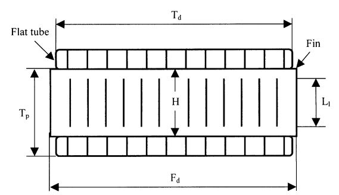
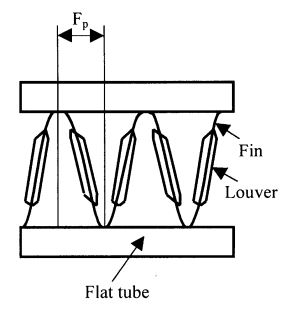
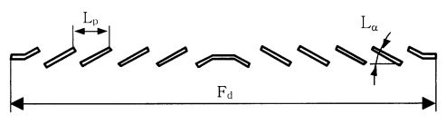

Help - Usage¶
multi-louvered fin¶
Description¶
The package calculates different features of a Louver fin with a flat tube
Schematic of louver fin¶
Figure 1:Definition of geometrical parameters for a multi-louvered fin heat exchanger Man-Hoe Kim, Clark W. Bullard
Figure 2:Definition of geometrical parameters for a multi-louvered fin heat exchanger Man-Hoe Kim, Clark W. Bullard
Figure 3:Cross-section of louver fin geometry Man-Hoe Kim, Clark W. Bullard
Features¶
colburn j factor
fanning friction factor
h_o heat transfer coefficient
pressure drop
Nusselt_number
Instance¶
For the instance you need to provide the following parameters:
Fin parameters:
F_p = Fin pitch [m]
H = Fin height [m]
delta_f = Fin thickness [m]
Louver parameters:
louver_pitch=L_p [m]
louver_angle=L_alpha (deg)
louver_length=L_l [m]
Tube parameters:
tube_pitch=T_p [m]
Air parameters:
V_c=Maximum air velocity [m/s]
viscosity_o = Viscosity of air [kg/m-s]
F_d = Flow depth [m]
Pr_o = Prandtl number of air
A_o = Total air-side surface area [m^2]
A_c = Minimum free-flow area for air side [m^2]
density_m = Mean average air density [m^2]
Cp_o = Specific heat of air [J/kg-K]
T_o2 = airside oulet temperature [K]
T_o1 = airside inlet temperature [K]
Usage¶
from cal import MultiLouvered as cal
def get_data001():
return {
'V_c': 3.27,
'L_p': 0.0017,
'viscosity_o': 1.85 * 10**-5,
'L_alpha': 23,
'F_p': 0.0014,
'H': 0.00815,
'F_d': 0.02,
'L_l': 0.0064,
'T_p': 0.01015,
'delta_f': 0.0001,
'Pr_o': 0.71,
'A_o': 0.1785,
'A_c': 0.0084,
'density_m': 1.225,
'Cp_o': 1007,
'T_o2': 30,
'T_o1': 21
}
J_colburn_factor = louver.j
friction_factor = louver.f
heat transfer_coefficient=louver.h_c
Pressure_drop=louver.pressure_drop
efficiency=louver.eta_overall
#Results
J_colburn_factor = 0.0259
friction_factor = 0.147
heat transfer_coefficient=129.0434
Pressure_drop=29.0999
efficiency=0.619